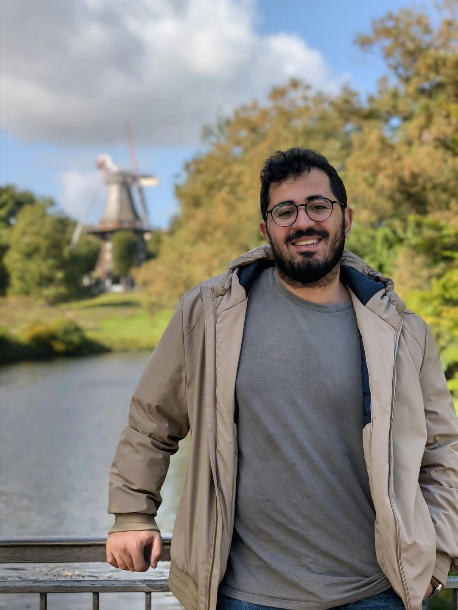

Image-based airway CFD
I reconstruct airways from micro-CT to study how small-airway disease changes pressure loss and resistance in chronic obstructive pulmonary disease (COPD).
Postdoctoral Research Assistant
Université Côte d’Azur Nice, France
I develop mathematical and computational models, with a focus on the respiratory system.
At the Laboratoire Jean Alexandre Dieudonné (LJAD), I work under the supervision of Benjamin Mauroy.

I reconstruct airways from micro-CT to study how small-airway disease changes pressure loss and resistance in chronic obstructive pulmonary disease (COPD).
At LJAD, I develop mathematical models of airway-tissue viscoelasticity and use OpenFOAM to study air–mucus interfacial flow and plug formation.
I develop models of forced expiration and gas exchange to connect airway mechanics and regional ventilation to measures of lung function.
Yousry K. Mohamady, Charlotte De Fays, Iwein Gyselinck et al.
SSRN preprint
Yousry K. Mohamady, Vincent Geudens, Charlotte De Fays et al.
EBioMedicine
Vincent Geudens, Charlotte De Fays, Lynn Willems et al., including Yousry K. Mohamady
American Journal of Respiratory and Critical Care Medicine